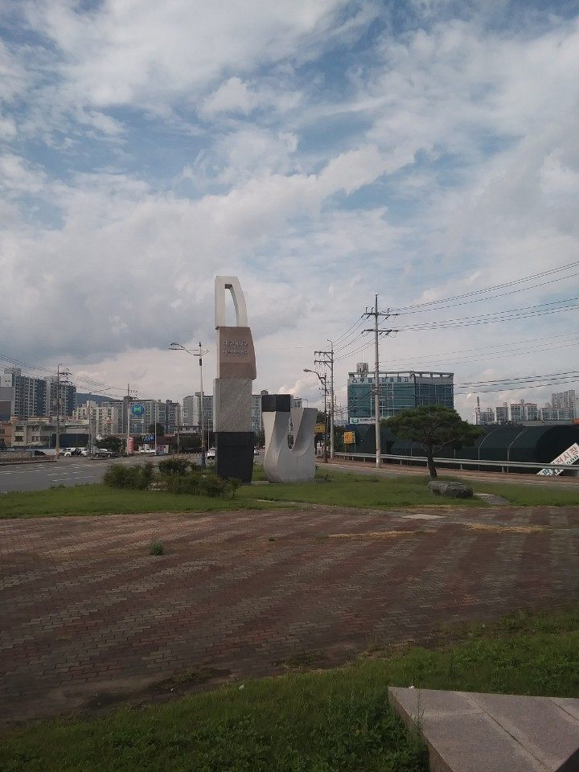

대구대학교는 1956년에 설립된 사립대학으로, 본교 캠퍼스는 경상북도 경산시에 있습니다. 이름은 ‘대구’지만 큰 캠퍼스는 경산에 있다는 점을 먼저 알아 두시면 지도를 볼 때 헷갈리지 않습니다. 특수교육과 재활과학, 사회복지 분야에서 오래 이름이 알려진 대학이기도 합니다.
2027학년도 수시 원서접수는 2026년 9월 7일부터 9월 11일 오후 6시까지로 이미 마감됐습니다. 그래서 오늘 이 글을 읽으실 분은 대부분 고1·고2 학부모님이실 것입니다. 지금 보실 것은 경쟁률이 아니라 이 대학의 문이 어느 쪽으로 열려 있는지입니다. 그리고 2027학년도 대구대는 그 문이 꽤 크게 움직인 대학입니다.
정원 내 모집의 98%가 수시입니다
숫자부터 보겠습니다. 대구대는 2027학년도에 정원 내 기준 3,782명을 모집하고, 그 가운데 수시가 3,706명(98%), 정시가 76명(2%)이라고 발표됐습니다.
이 비율은 한 번 더 읽어 보셔야 합니다. 정시로 열리는 자리가 100명이 채 되지 않습니다. 즉 이 대학을 목표로 둔다면 사실상 수시 하나로 간다고 보셔야 합니다. “내신이 아쉬우니 정시로 뒤집겠다”는 전략이 통하기 어려운 구조입니다.
고1·고2 가정에 이 숫자가 주는 지침은 단순합니다. 학교에서 받는 성적과 생활기록부가 거의 전부라는 것입니다. 수능 공부를 하지 말라는 뜻이 아니라, 우선순위를 헷갈리지 말라는 뜻입니다.
가장 큰 길은 학생부교과 2,302명입니다
수시 안에서도 자리가 가장 넓은 갈래는 학생부교과입니다. 발표된 전형별 모집 인원은 이렇습니다.
- 일반 — 1,885명. 이 대학에서 가장 큰 문입니다.
- 지역인재 — 133명
- 면접 — 109명
- 특성화교과 — 96명
- 특수창의융합인재 — 30명
- 기회균형Ⅰ — 29명
- 라이프디자인(신설) — 20명
교과 전형 하나에 2,302명입니다. 수시 전체(3,706명)의 60%가 넘습니다. 대구대를 생각하는 학생에게 내신 등급이 1순위라는 말이 과장이 아닌 이유입니다.
다만 모집단위별 세부 인원과 교과 성적 반영 교과·과목 수, 등급 환산 방식, ‘면접’ 전형의 면접 비율과 평가 방식은 확인하지 못해 이 글에 담지 않았습니다. 같은 교과 전형이라도 반영 과목이 무엇이냐에 따라 내 등급이 달라지므로 요강 확인이 꼭 필요합니다.
간호학과를 빼고 수능최저가 폐지됐습니다
2027학년도 대구대에서 가장 크게 바뀐 것이 이것입니다. 간호학과를 제외한 전 학과에서 수능최저학력기준이 폐지됐습니다. 그동안 별도로 수능최저가 걸려 있던 물리치료학과의 수능최저도 함께 폐지됐다고 발표됐습니다.
이게 무슨 뜻인지 풀어 보겠습니다. 수능최저는 “내신으로 뽑되, 수능에서 이 정도는 나와야 한다”는 문턱입니다. 해마다 내신은 충분한데 이 문턱 하나에 걸려 떨어지는 지원자가 나옵니다. 그 문턱이 사라졌다는 것은 교과 전형이 사실상 내신만으로 승부가 나는 구조가 됐다는 뜻입니다.
양쪽 다 봐야 합니다.
- 유리한 점 — 수능 준비가 약한 학생도 내신만으로 지원할 수 있습니다. 내신 관리에 집중해 온 학생에게는 길이 넓어졌습니다.
- 불리한 점 — 문턱이 사라지면 지원자가 늘고, 합격선 내신 등급은 올라가는 경향이 있습니다. 수능최저가 걸러 주던 인원을 이제 내신 등급이 걸러야 하기 때문입니다.
그래서 “최저가 없어졌으니 편해졌다”로 읽으시면 곤란합니다. 경쟁이 내신 한 줄로 더 몰렸다로 읽으시는 편이 정확합니다. 고1·고2라면 결론은 하나입니다. 지금 학기의 중간·기말이 그대로 지원 자격이 됩니다.
간호학과를 생각하신다면 반대입니다. 이 대학에서 수능최저가 남아 있는 거의 유일한 자리이므로, 내신과 수능을 함께 끌고 가야 합니다. 다만 간호학과에 적용되는 수능최저의 구체적인 등급 기준은 확인하지 못해 이 글에 적지 않았습니다.
지역인재가 교과에서 학생부종합으로 옮겨갔습니다
두 번째 큰 변화입니다. 숫자를 나란히 놓으면 바로 보입니다.
- 학생부교과 지역인재 — 지난해 464명 → 올해 133명으로 줄었습니다.
- 학생부종합 지역인재 — 285명으로 신설됐습니다. 선발 방법은 서류평가 100%이고, 지원 자격은 대구·경북 지역 고등학교에서 전 교육과정을 이수한 학생입니다.
지역인재로 들어가는 전체 자리는 크게 줄지 않았는데, 그 자리의 성격이 바뀌었습니다. 전에는 대구·경북 학생이 지역인재로 가려면 주로 내신 등급 순으로 겨뤘습니다. 이제는 그중 상당수가 생활기록부를 읽어서 뽑는 자리로 옮겨갔습니다.
대구·경북에 사는 고1·고2 가정이라면 여기서 할 일이 달라집니다. 등급만 관리하면 되던 길에, 생활기록부에 흐름을 만드는 일이 하나 더 붙었습니다. 서류평가 100%라는 말은 면접 부담이 없다는 뜻이면서 동시에 생활기록부 한 권이 전부라는 뜻이기도 합니다. 말로 보완할 기회가 없습니다.
서류를 읽는 사람이 보는 것은 활동의 화려함이 아니라 이어짐입니다. 1학년에 궁금해한 것이 2학년 세부능력특기사항으로 이어지고, 3학년 과목 선택으로 연결되는 학생이 가장 잘 읽힙니다. 반대로 학년마다 관심사가 전혀 다르고 활동만 많은 생활기록부는 서류 100% 전형에서 설명할 자리가 없습니다.
한 가지 기준도 알아 두시면 좋겠습니다. 2027학년도 지역인재 지원 자격은 해당 권역 고등학교에서 전 교육과정 3년을 이수한 학생이고, 중학교 과정까지 그 지역에서 다녀야 하는 강화된 요건은 2028학년도부터 적용됩니다. 다만 대구대 지역인재 전형의 세부 지원 자격과 모집단위별 인원은 확인하지 못해 이 글에 담지 않았습니다.
학생부종합은 1,079명 — 서류 791명이 중심입니다
학생부종합 전체 모집 인원은 1,079명으로 발표됐습니다.
- 서류 — 791명
- 지역인재(신설) — 285명
- 지역기회균형 — 3명
교과 2,302명에 비하면 작아 보이지만, 1,000명이 넘는 자리입니다. 내신 등급만으로는 설명되지 않는 학생에게 열려 있는 문이 그만큼 있다는 뜻입니다. 등급이 2점대 후반에서 3점대인데 특정 과목에서 눈에 띄는 학생, 1학년보다 3학년이 분명히 나아진 학생이 이 길을 봅니다.
그리고 이 대학에서 면접고사는 10월 31일로 안내됐습니다. 면접이 들어가는 전형이 있다는 뜻이므로, 서류만 생각하고 계셨다면 지원 전에 내 전형에 면접이 있는지부터 확인하셔야 합니다. 어느 전형에 면접이 들어가는지, 면접 반영 비율과 방식이 어떤지는 확인하지 못해 이 글에 적지 않았습니다.
진로선택과목 반영이 3과목 이내로 늘었습니다
눈에 잘 안 띄지만 실제 등급에 영향을 주는 변화가 하나 더 있습니다. 교과 성적을 계산할 때 반영하는 진로선택과목이 기존 2과목에서 3과목 이내로 확대됐습니다.
진로선택과목은 등급 대신 성취도(A·B·C)로 기록되는 과목입니다. 반영 과목 수가 늘었다는 것은 진로선택에서 받은 성취도가 내 교과 성적에 들어가는 몫이 커졌다는 뜻입니다. 고2·고3에서 진로선택과목을 ‘등급 안 나오는 과목이니까’라며 가볍게 넘긴 학생은 손해를 봅니다.
고1·고2 가정에서 지금 챙기실 것은 과목 선택을 할 때 ‘듣기 편한 과목’이 아니라 ‘끝까지 A를 받을 수 있는 과목’으로 고르는 것입니다. 그리고 진로선택 과목의 수행평가와 세부능력특기사항은 교과 전형과 학종 양쪽에 동시에 쓰입니다.
새로 생긴 교과 라이프디자인 전형도 함께 알아 두시면 좋겠습니다. 학습지원대상학생, IQ 71~84에 해당하는 학생, 특수교육대상자 가운데 20명을 뽑는 전형으로 신설됐습니다. 특수교육으로 오래 알려진 대학의 성격이 전형에도 드러난 자리입니다.
2027 수시 경쟁률은 6.55대 1이었습니다
이미 끝난 접수지만 결과도 짚고 가겠습니다. 2027학년도 수시에서 대구대는 정원 내 3,656명 모집에 23,939명이 지원해 평균 6.55대 1을 기록했다고 보도됐습니다. 지원자가 2만 명을 넘었습니다.
평균 6.55대 1은 비수도권 사립대 수시로는 낮지 않은 숫자입니다. 수능최저가 사라지면서 지원 문턱이 낮아진 영향도 함께 보셔야 합니다. 다만 전형별·학과별 경쟁률은 확인하지 못해 이 글에 담지 않았습니다. 대학 전체 평균 경쟁률과 내가 지원할 학과의 경쟁률은 전혀 다른 숫자입니다.
일정도 함께 정리해 둡니다. 서류 제출은 9월 7일부터 18일 오후 5시, 면접고사는 10월 31일, 2단계 합격자 발표는 수능최저를 적용하지 않는 모집단위가 11월 16일, 적용하는 모집단위가 12월 18일로 안내됐습니다. 수능최저가 걸리는 자리는 수능 성적이 나와야 결과가 나오기 때문에 한 달 뒤에 발표되는 것입니다.
지원 전 체크리스트
- 수시로 간다고 정했는가. 정원 내 모집의 98%가 수시입니다. 정시로 뒤집는 전략은 이 대학에서 통하기 어렵습니다.
- 내신 등급이 주력인가, 생활기록부가 주력인가. 교과 2,302명, 학종 1,079명. 둘 다 길이 있지만 준비하는 것이 다릅니다.
- 대구·경북 고등학교인가. 그렇다면 지역인재가 교과(133명)와 학종(285명) 양쪽에 있습니다. 학종 쪽이 두 배 넘게 큽니다.
- 간호학과를 보고 있는가. 이 대학에서 수능최저가 남아 있는 자리입니다. 내신만으로는 안 됩니다.
- 진로선택과목을 가볍게 보고 있지 않은가. 반영이 3과목 이내로 늘었습니다.
- 수능 날짜. 2027학년도 수능은 2026년 11월 19일입니다.
마무리하며
대구대학교의 2027학년도 수시를 한 줄로 줄이면 이렇습니다. 정원의 거의 전부를 수시로 뽑고, 간호학과를 빼면 수능최저가 없으며, 대구·경북 학생을 위한 자리는 내신 순에서 생활기록부를 읽는 쪽으로 옮겨갔다.
고1·고2 가정에 주는 지침도 그만큼 분명합니다. 내신이 먼저이고, 생활기록부가 그다음입니다. 수능최저가 없다는 말을 ‘수능을 안 봐도 된다’가 아니라 ‘내신으로 결판난다’로 읽으셔야 합니다. 그리고 대구·경북에 계신다면, 지역인재라는 유리한 카드가 이제 등급만으로는 쥘 수 없는 카드가 됐다는 점을 기억하셔야 합니다.
가장 피해야 할 것은 아무것도 정하지 않은 채 내신·수능·비교과를 조금씩 하는 것입니다. 수능최저가 사라진 대학에서는 어중간한 내신이 가장 설 자리가 없습니다.
와와 학습코칭센터에서는 아이의 학년과 성적 흐름에 맞춰 목표 대학과 전형을 함께 정리해 드립니다. 교과로 갈지 서류로 갈지, 지역인재를 쓸 수 있는지부터 막막하시다면 가까운 센터에서 상담을 신청해 보세요.
※ 본 글은 대구대학교 2027학년도 수시모집 관련 언론 보도와 공개 자료를 바탕으로 정리했습니다. 인용한 모집 인원·경쟁률·일정과 전형 변화는 보도 시점에 발표된 내용입니다. 모집단위별 세부 모집 인원, 교과 성적 반영 교과·과목 수와 등급 환산 방식, 진로선택과목 성취도 환산 방법, 간호학과에 적용되는 수능최저의 구체적 등급 기준, 면접이 들어가는 전형과 면접 반영 비율·방식, 지역인재 전형의 세부 지원 자격, 학생부종합 서류평가의 항목과 비율, 라이프디자인·특성화교과·기회균형 등 특별전형의 지원 자격, 전형별·학과별 경쟁률, 장학금 제도는 확인하지 못해 이 글에 담지 않았습니다. 확인되지 않은 숫자와 기준은 기재하지 않았습니다. 사진은 대구대학교 경산캠퍼스 입구를 촬영한 것으로 현재 모습과 다를 수 있습니다. 세부 사항은 모집요강에서 확정되며 변경될 수 있으므로, 반드시 대구대학교 입학처의 2027학년도 수시모집요강 원문에서 본인 지원 모집단위 기준으로 최종 확인하시기 바랍니다.